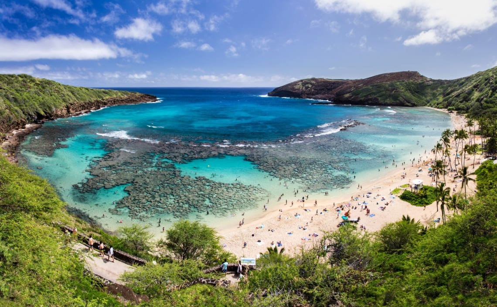
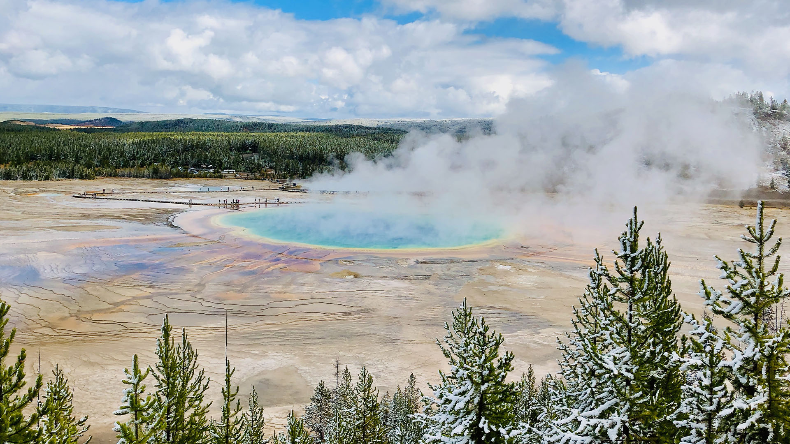

Lugares turísticos de Estados Unidos

Gran Cañón

El gran cañón es un lugar de Arizona que destaca por su gran paisaje y su rica historia geológica. Es conocido por sus paredes escarpadas y colores vibrantes que han sido erosionados por el río Colorado a lo largo de millones de años. El Gran Cañón ha inspirado a numerosos cineastes y es considerado un símbolo de la humanidad y la belleza natural.
Hawaii

Hawaii es uno de los lugares turísticos más importantes de Estados Unidos debido a su hermosa combinación de paisajes naturales y culturales. Las islas tropicales, las selvas prístinas y las playas de agua turquesa ofrecen una experiencia única que atrae a millones de turistas cada año.
Parque de Yellowstone

El parque de Yellowstone es famoso por su impresionante belleza natural y sus características geotérmicas, con atracciones como la gran fuente Prismática y el géiser Old Faithful. En especial por la gran fuente Prismática que es la tercera fuente termal más grande del mundo, sus colores vibrantes que van del azúl al naranja, lo convierten en un lugar icónico del parque.